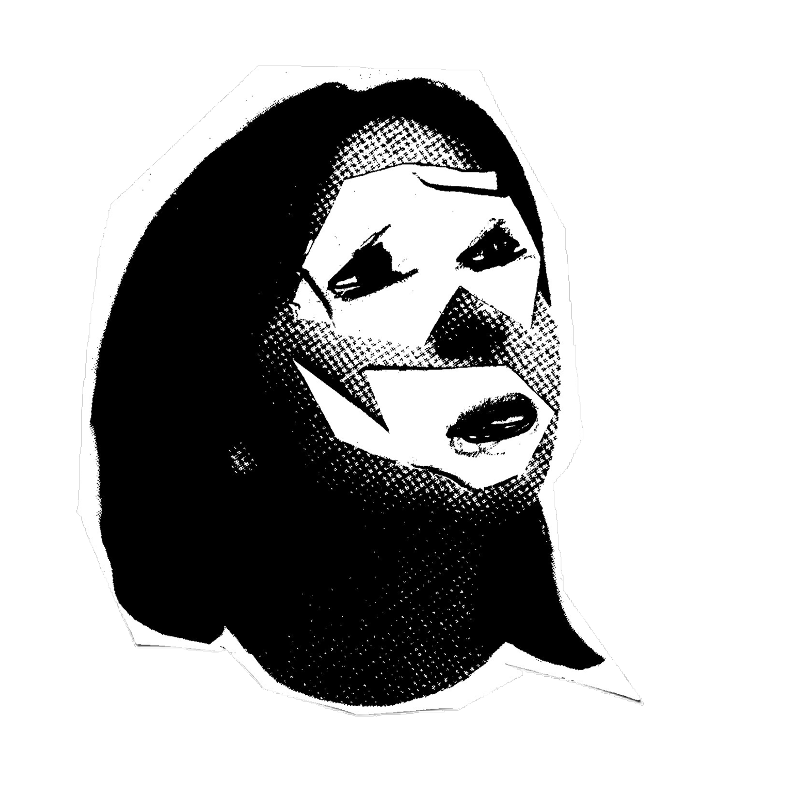
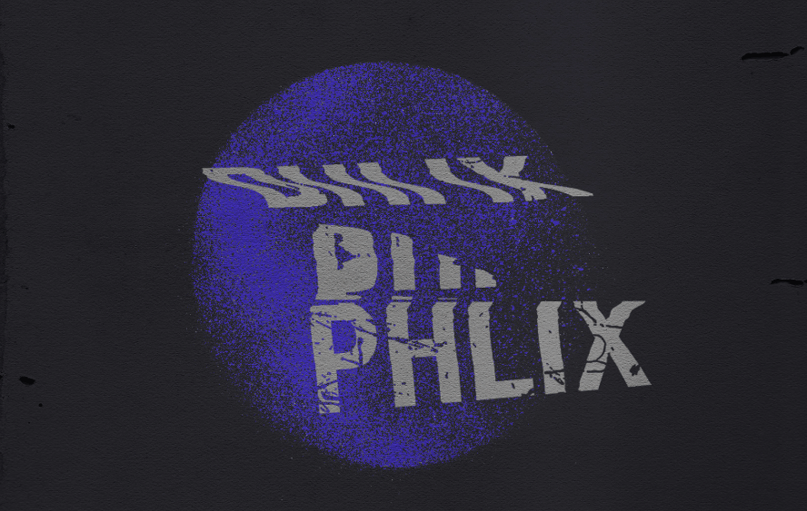
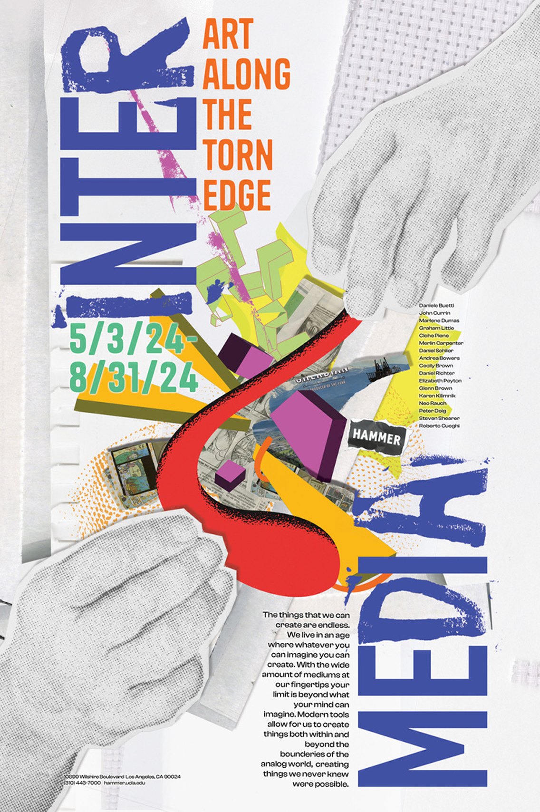
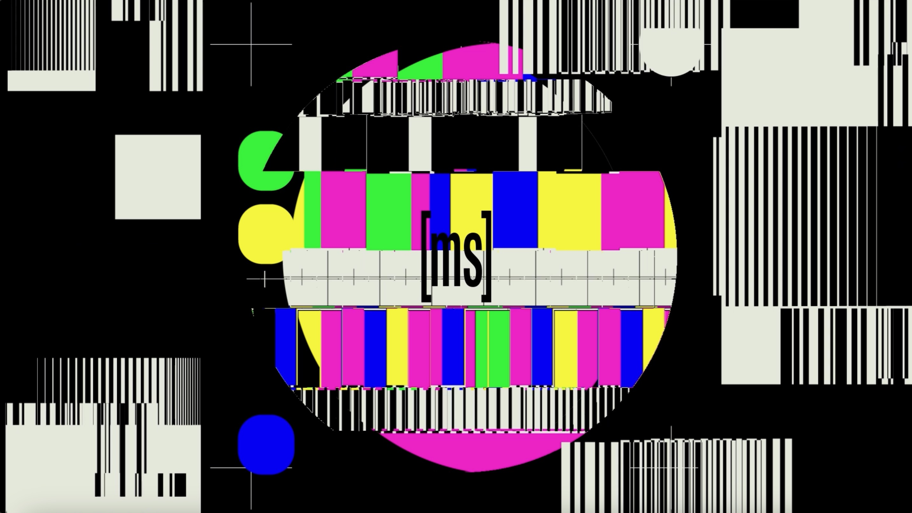
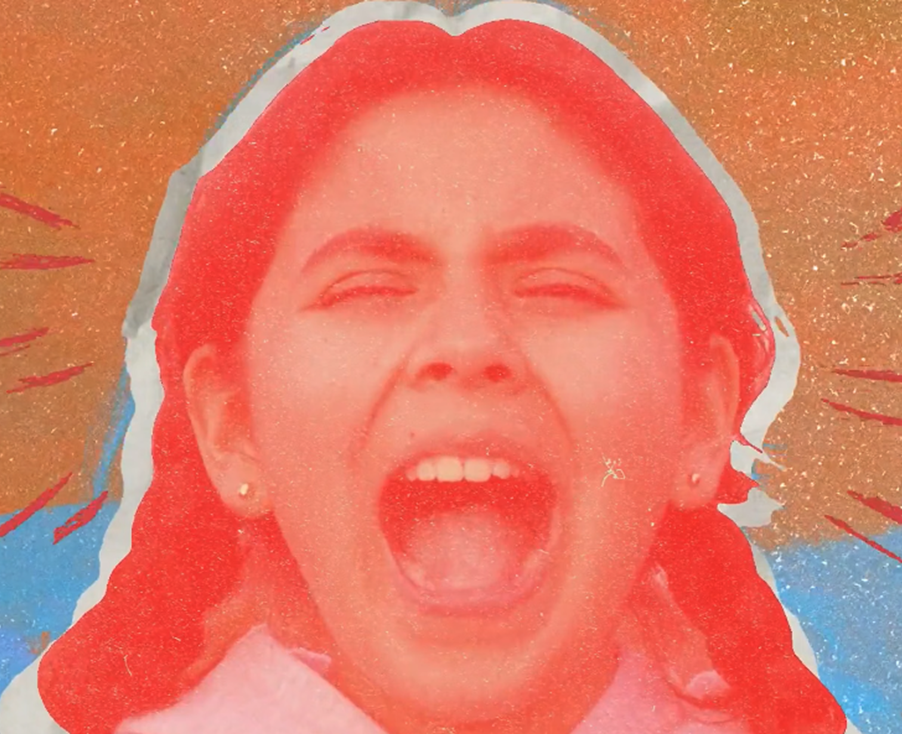
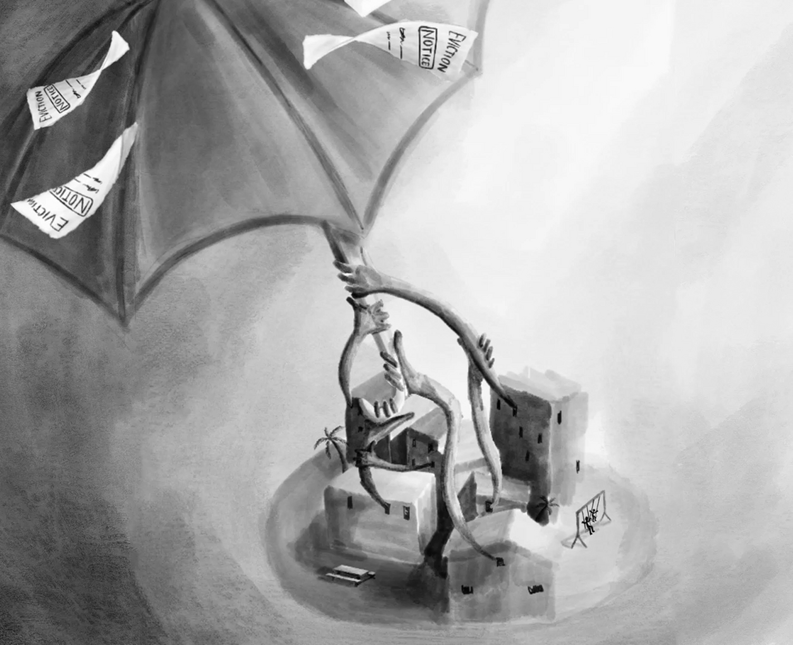
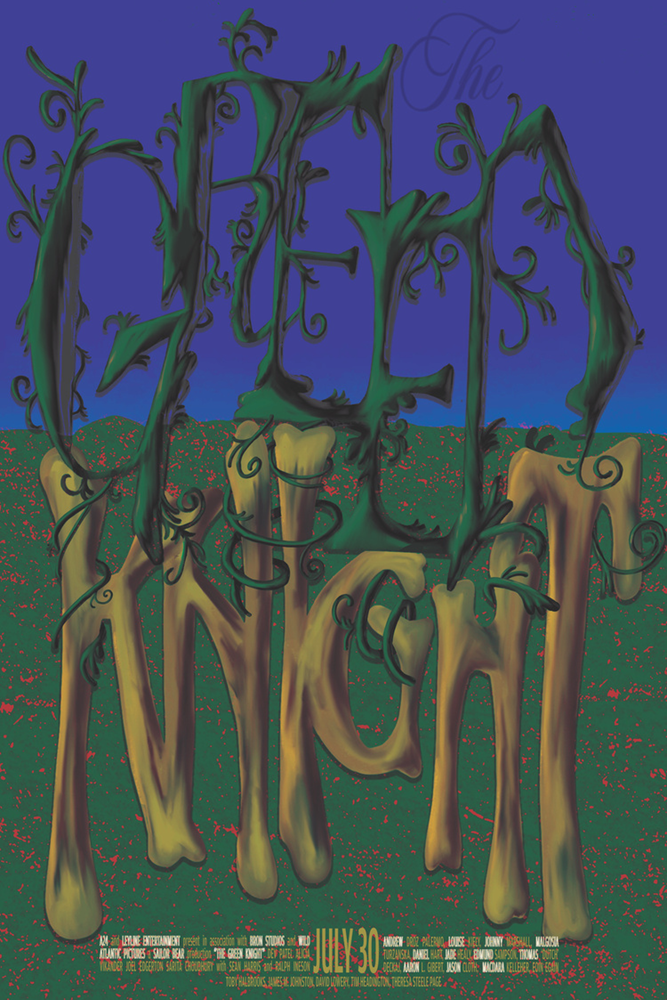

Kiara Aguilar
Playful by design.

Interview by: Dominic Rietta
October 13, 2026
A graphic designer based in Los Angeles and undergrad student at California Institute of the Arts.
How would you describe yourself as a designer?
I would describe myself as a detail-oriented, playful, and resourceful designer. Recently, I've been drawn to experimenting with unconventional materials found in my surroundings, using them both as a medium for creating and as a source of inspiration!

PHILX concept logo (2024)
“I lean into my intuition and allow myself to experiment and play!”

Intermedia Poster (2025)
Whose work or what experiences in art & design have shaped how you see things creatively?
I think the people around me. While I have other artists and designers whose work inspires me, I find that I learn the most from my peers and the creatives I interact with on a regular basis. Seeing how other creatives approach the same project brief encourages me to think outside of my own perspective. I enjoy being able to share ideas and learn from the people around me because it exposes me to different ways of thinking and making.
Which past project are you especially proud of and what makes it meaningful to you?
I think MOSHO so far. It was such a fun experience to build something from the ground up alongside a team that was just as invested and excited as I was. Being able to collaborate with others who shared the same goal of creating the best experience possible made the process especially rewarding once it finally came to fruition. I also love doing motion whenever I can, so creating the identity and motion for the project was super fun.

MOSHO (2026)
When you begin a new project, how do you structure your process to go from the initial idea to final deliverables?
I divide my creative process into two phases. The first is centered around thinking, where I make intentional decisions, explore ideas, and develop concepts. The second focuses more on making, where I lean into my intuition and allow myself to experiment and play!
“Rather than getting caught up in trying to force an idea, I prefer to experiment with different solutions and see where they take me."
What do you do when you're stuck or uninspired? Do you lean further into design or look for inspiration outside of it?
I like to zero in on the specific part of the process I'm struggling with, whether that's image-making, typography, or something else, and try starting that part over with a different approach. I find that stepping back and looking at the problem from a new perspective helps me figure out what isn’t working and explore possibilities I might not have considered before.

Face to Face Music Video (2024)

We Will Not Be Moved (2025)
Do you have any habits, routines, or rituals that help your workflow and mindset?
I find that I work best in a quieter, more focused environment where I can fully immerse myself in what I'm doing. Whenever I have a hard time concentrating or find myself getting distracted by my surroundings, I like to put on my headphones and listen to music. It helps me tune out distractions, get into the right headspace, and stay focused on the task at hand.

The Green Knight: Type Poster (2025)
What are some interests or hobbies outside of design, and do they influence your creative work at all?
I think having these other creative hobbies gives me the opportunity to experiment with different ways of making and learn new techniques that I might not otherwise encounter through design alone. Whenever I learn a new method or discover an interesting material through one of my hobbies, I often find ways to incorporate it into my creative work. I like that the skills and ideas I develop outside of design can translate into my practice, allowing me to approach projects from different perspectives.
What kind of work would you love to explore doing in the future in any capacity or form?
I would really love to explore motion design in a more experimental and unconventional way. I think I tend to stick to techniques and styles that I’m already comfortable with because I know I can achieve the results I’m looking for. In the future, I want to challenge myself to step outside of that comfort zone and become more open to unexpected outcomes. I’d love to see how far I can push my work by experimenting with different techniques and allowing myself more room to play!